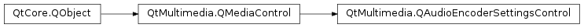

QAudioEncoderSettingsControl¶
Detailed Description¶
The
PySide2.QtMultimedia.QAudioEncoderSettingsControlclass provides access to the settings of a media service that performs audio encoding.If a
PySide2.QtMultimedia.QMediaServicesupports encoding audio data it will implementPySide2.QtMultimedia.QAudioEncoderSettingsControl. This control provides information about the limits of restricted audio encoder options and allows the selection of a set of audio encoder settings as specified in aPySide2.QtMultimedia.QAudioEncoderSettingsobject.The functionality provided by this control is exposed to application code through the
PySide2.QtMultimedia.QMediaRecorderclass.The interface name of
PySide2.QtMultimedia.QAudioEncoderSettingsControlisorg.qt-project.qt.audioencodersettingscontrol/5.0as defined inQAudioEncoderSettingsControl_iid().
-
class
PySide2.QtMultimedia.QAudioEncoderSettingsControl([parent=nullptr])¶ Parameters: parent – PySide2.QtCore.QObjectCreate a new audio encoder settings control object with the given
parent.
-
PySide2.QtMultimedia.QAudioEncoderSettingsControl.audioSettings()¶ Return type: PySide2.QtMultimedia.QAudioEncoderSettingsReturns the audio encoder settings.
The returned value may be different tha passed to
QAudioEncoderSettingsControl.setAudioSettings()if the settings contains the default or undefined parameters. In this case if the undefined parameters are already resolved, they should be returned.
-
PySide2.QtMultimedia.QAudioEncoderSettingsControl.codecDescription(codecName)¶ Parameters: codecName – unicode Return type: unicode Returns the description of audio codec
codecName.
-
PySide2.QtMultimedia.QAudioEncoderSettingsControl.setAudioSettings(settings)¶ Parameters: settings – PySide2.QtMultimedia.QAudioEncoderSettingsSets the selected audio
settings.
-
PySide2.QtMultimedia.QAudioEncoderSettingsControl.supportedAudioCodecs()¶ Return type: list of strings Returns the list of supported audio codec names.
© 2018 The Qt Company Ltd. Documentation contributions included herein are the copyrights of their respective owners. The documentation provided herein is licensed under the terms of the GNU Free Documentation License version 1.3 as published by the Free Software Foundation. Qt and respective logos are trademarks of The Qt Company Ltd. in Finland and/or other countries worldwide. All other trademarks are property of their respective owners.